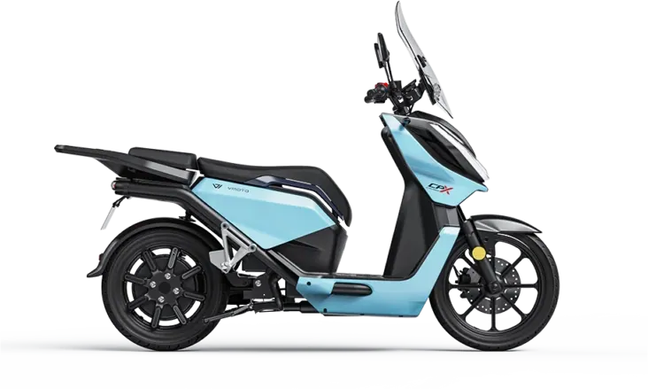
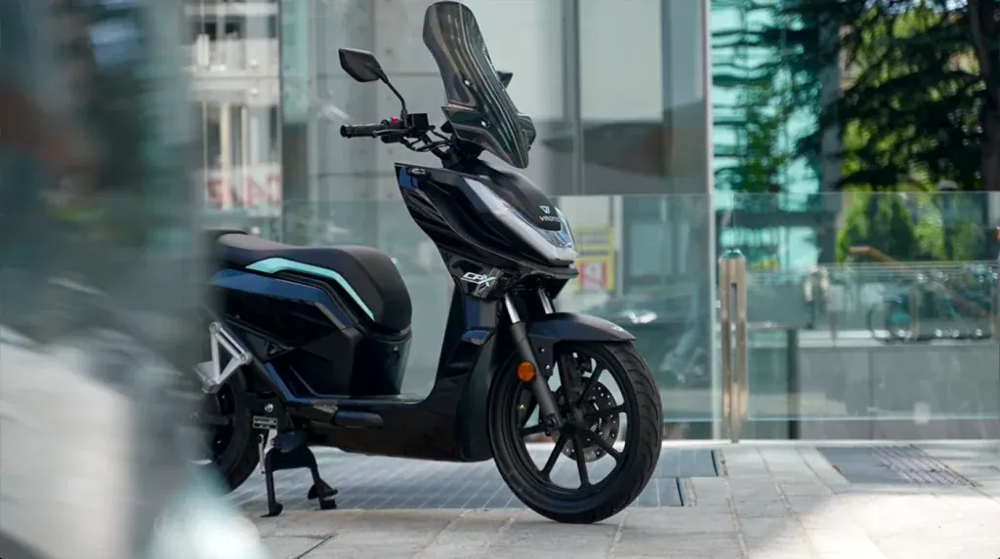
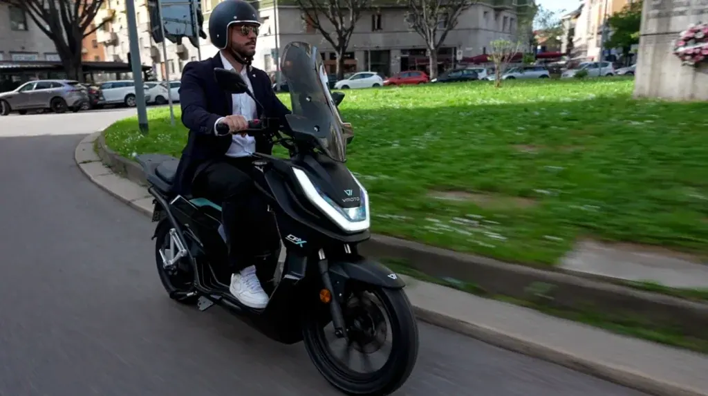
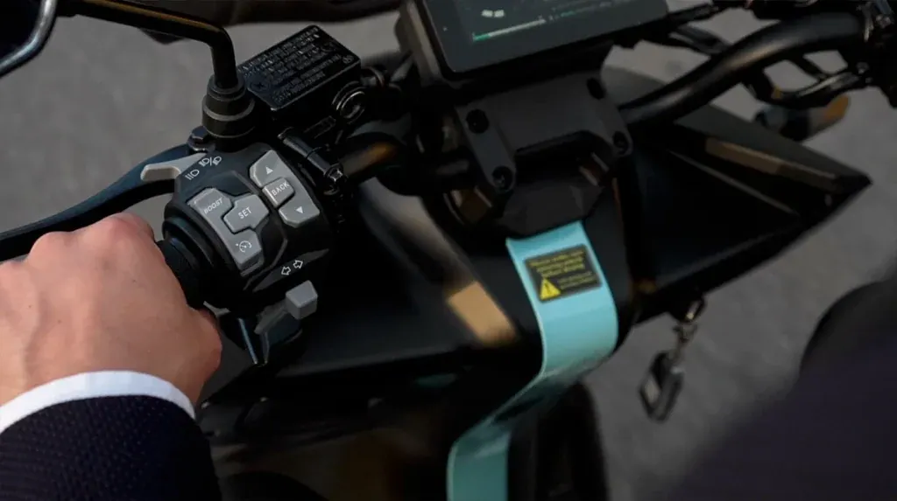

Vmoto
CPX
B·A1 Eléctrica · 6,6 kW · Scooter
Propuesta de OpsPilot para Expomoto Córdoba, en revisión. No es la web oficial: expomotocordoba.es
Inicio › Motos › Vmoto › CPX EXPLORER

Vmoto
Muévete con elegancia
Precio y financiación: te los damos al momento por teléfono (pendientes de publicar en la web).



El CPX Explorer combina un diseño minimalista, elegante y moderno, pensado para la movilidad urbana del día a día. Con una evolución de su versión anterior, mejora su estética a través de líneas más refinadas y proporciones optimizadas, transmitiendo innovación, fiabilidad y sofisticación desde el primer vistazo.
Diseñada para afrontar cualquier reto urbano, la CPX Explorer garantiza una respuesta constante y fiable, incluso en las condiciones más exigentes.
Cada detalle de la CPX Explorer está diseñado para facilitar los trayectos diarios. La altura del asiento, la geometría del chasis y la distribución del conjunto ofrecen comodidad, reduciendo el esfuerzo y evitando fatiga. El resultado: una conducción más cómoda, segura y eficiente.
| Motor | motor en rueda |
|---|---|
| Homologación | L3e-A1 (equivalente a 125cc.) |
| Potencia nominal | 7.0 kW |
| Potencia máxima | 8.0 kW |
| Refrigeración | Aire |
| Velocidad máxima | 105 km/h |
| Autonomía | 106 Km homologado con 2 baterías |
| Ángulo de subida | 19° |
| Modelo de batería | Batería extraíble polímero de Litio |
| Número de baterías | 2 |
| Capacidad batería | 3,3 kWh (74V 45Ah) |
| Tiempo de recarga por batería | 5 h (0,72 kW) / 3 h (1,44 kW) / 0,5 h (6,6 kW de 0 a 80%) |
| Suspensión delantera | Doble brazo hidráulico |
| Suspensión trasera | Mono amortiguador hidraulico |
| Freno delantero | Disco 240mm ABS |
| Freno trasero | Disco 220mm ABS |
| Neumáticos | Delantera 100/80-16 | Trasera 110/80-14 |
| Llantas | Delantera 2.15-16 | Trasera 2.5-14 |
| Distancia entre ejes | 1366 mm |
| Peso orden de marcha (sin baterías) | 112 kg |
| Largo x ancho x alto | 2125 mm*750 mm*1520 mm |
| Altura libre de suelo | 154 mm |
| Altura de asiento | 760 mm |
| Peso máximo admisible (mmta) | 320 kg |
| Ocupantes | 2 |
| Colores | Blanco, Negro, Rojo, Azul |
Datos de la marca, tal como se publican en expomotocordoba.es.